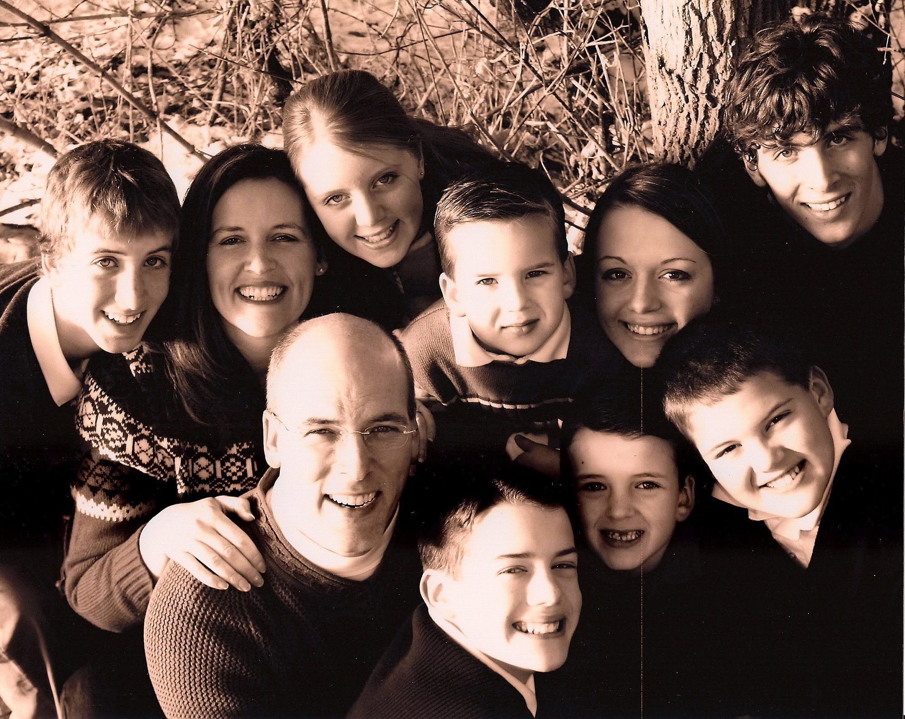
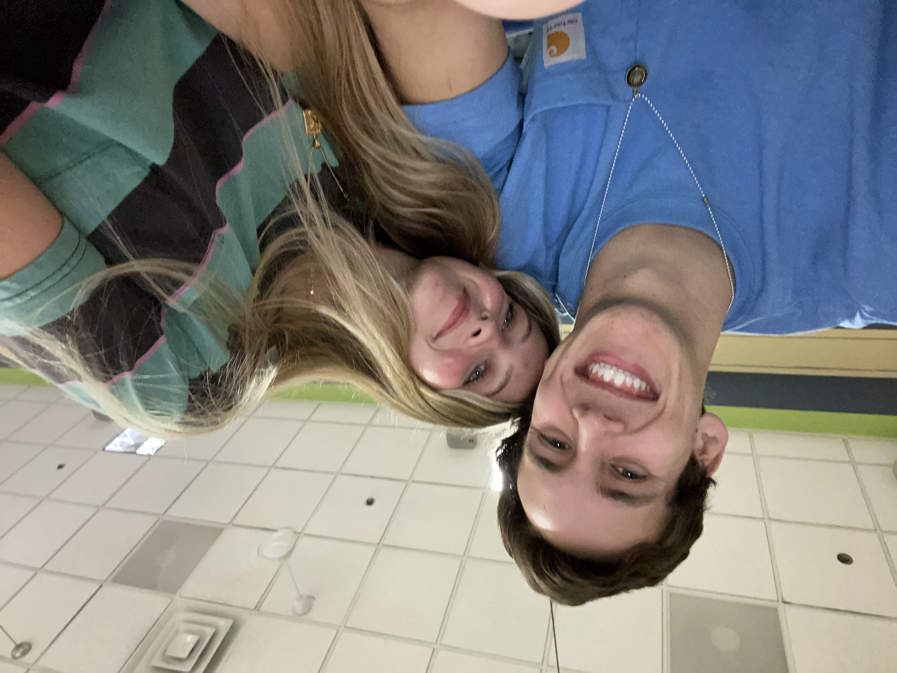
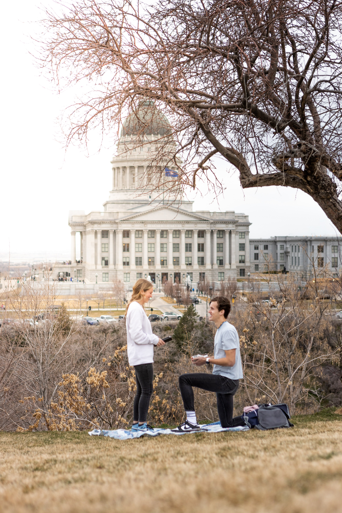

I was born in Bountiful, Utah on February 11th, 2000. I was born into a family of 8 children, with 6 boys and 2 girls with me as the youngest. 6 of my 7 siblings of half siblings, 4 from my Mom's previous marriage and 2 from my Dad's previous marriage. I grew up with my full blood brother and my 4 half siblings from my Mother's previous marriage. My two brothers from my Dad's previous marriage would visit occasionally. I love each of my siblings and to me the whole half-blood, full-blood mumbojumbo doesn't mean a whole lot to me. My siblings are more to me than jsut blood, they're family.
I lived in Lindon and Provo, Utah till I was 6. After that we followed my Dad out to his new job in Madison, Wisconsin. Boy was it cold out there. There I became obsessed with sports and anything active. I became a huge Green Bay Packers, Milwaukee Bucks and Brewers, and Wisconsin Badgers fan. Years later in 2012 my Dad moved us down to Austin, Texas, where I would go to middle school and high school playing any sport I could. I got my first job at 16 working at a Pizza Truck and I'll never forget my first paycheck. I cashed out all $112 in ones. I then served a mission for The Church of Jesus Christ of Latter Day Saints in Manaus, Brazil. Smack dab in the middle of the Amazon Rainforest. I returned home, after learning Portuguese, growing in many ways, with plenty of incredible and crazy stories to tell, in 2020 with the COVID-19 Pandemic less than 100 days before planned.
I then spent the next three semesters attending BYU-Ido, I mean Idaho. No sadly nobody said I do to me then not that I even got close to asking or close to getting a girlfirend. After that I transfered down to BYU in Provo, Utah for the next year and met the love of my life. We were engaged in March. I love sports, movies, music, and concerts. I have a movie podcast, called Futro Hidden Movie Gems, with my brothers we do on a weekly basis and laugh a ton together. I hope someday to eventually open up my own pancake shop back in Austin, Texas.

(512) 202-2166
cameron.mickle@gmail.com